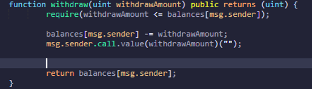

Fix the Vulnerability
ReEntrancy is a relatively easy vulnerability to fix, yet also a very easy mistake to make
• Vulnerable code pattern
◇ Checks → Interaction → Effects

• Secure code pattern:
◇ Checks → Effects → Interactions

When we re-Deploy the code of the contract with the Secure pattern, to it will be given a new address
With this simple change, our contracts balance is not decreased with each call to the withdraw function, only the attackers balance is reduced until the attacker runs out of funds.
If the attacker were to keep calling this function, the require check at the beginning of the function would fail as soon as the attacker ran out of funds. However, due to the usage of Call.Value and the lack of error handling, the funds may be incorrectly handled in the contract and error checking must be manually implemented.